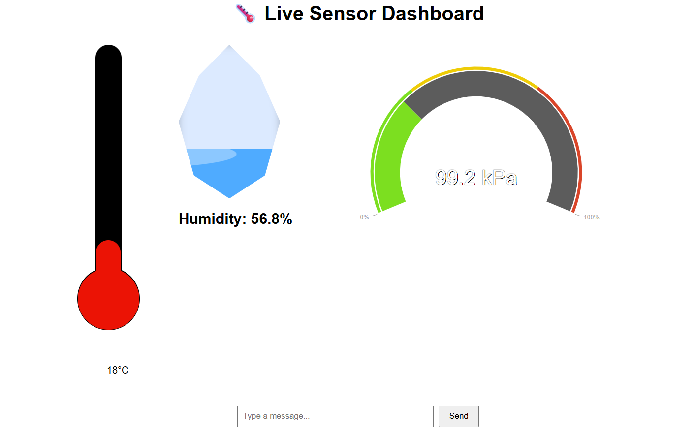

Mobile Application
aaaaa
Smart Home System

A high-performance web interface to visualize live telemetry from a Raspberry Pi. The system provides real-time updates for temperature (thermometer on the left), humidity (water droplet in the middle), and atmospheric pressure (gauge on the right) using a WebSocket pipeline, ensuring sub-second latency between hardware sensors and the browser. The current setup involves user input, which can be any message, but this is set to be changed to specific buttons depending on the the data needed by the frontend user.
This screenshot displays the core C++ logic running on the Raspberry Pi. The main.cpp file consists of class initialisation of the ServerConnection (which uses the libwebsockets library to connect to the frontend), the Bme280Sensor (uses the GIPO pins located on the raspberry pi) along with database initialisation which starts up a SQLite database. The request class represents a typical request design consisting of an id, time of the request, source and destination, request type (get, post, getAll, close). This request is converted from a JSON format coming from the frontend.
Future additions
- Addition of specific buttons (get, post, getAll and close connection)
- Addition of extra sensors in different rooms
- Addition of a centralised database raspberry pi
- Addition of Ui displaying several areas at once
- Addition of periodic reads from the sensors, and periodic writes to the database